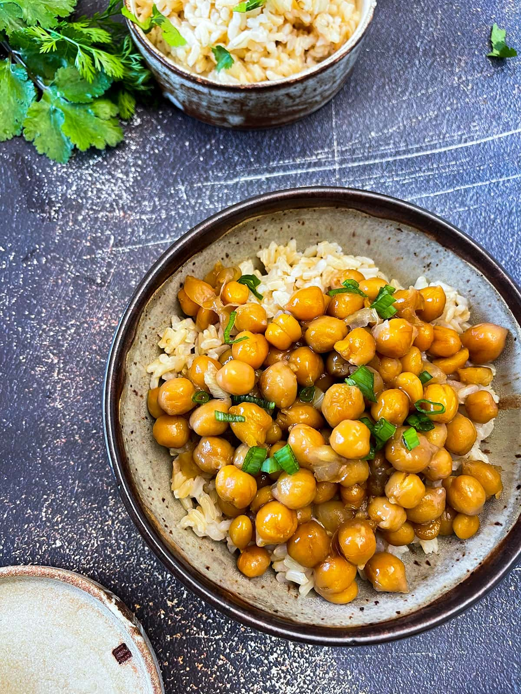

General Tso's Chickpeas

General Tso’s Chickpeas is a delicious and healthy alternative to general Tso chicken or even tofu for those who are avoiding soy.
Ingredients
- 1 1/2 cups cooked chickpeas, or 1 (15-ounces) can
- 1 tablespoon Bragg liquid aminos, or, Tamari sauce, or coconut aminos
- 1 tablespoon lemon juice
- 1 tablespoon cornstarch
- 1 tablespoon coconut oil
- 2 cloves garlic, chopped
- 1 teaspoon fresh ginger, grated
- 2 green onions, sliced, extra for garnish
- 1 teaspoon roasted sesame oil
- 1/2 cup vegetable broth, or aquafaba
- 2 tablespoons coconut sugar, or sweetener of choice
- 2 teaspoons Bragg liquid aminos
Steps
- In a medium bowl, add chickpeas, liquid aminos, lemon juice and cornstarch. Set aside for 10 minutes to marinate.
- Heat oil in a large skillet on medium heat, add garlic, ginger and spring onions. Cook for 1-2 minutes stirring constantly until fragrant. Add chickpeas and stir to coat.
- Mix sauce ingredients in a small bowl. Add to chickpeas and cook stirring gently until sauce thickens. Turn off heat and stir in sesame oil. Serve over steamed brown rice and garnish with spring onions.